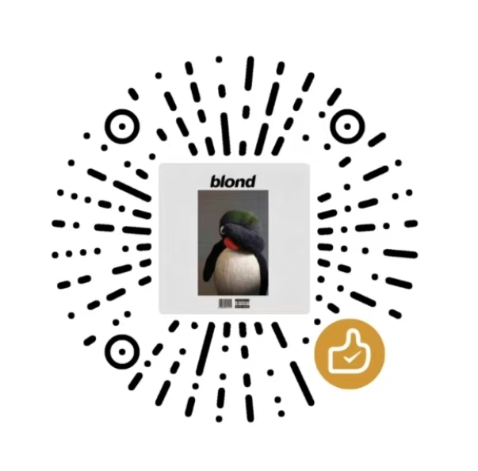

<!DOCTYPE html>
<html lang="zh">
<head>
<meta charset="utf-8" />
<title>sponsor dialog harness</title>
<link rel="stylesheet" href="../../JuniGrid/wwwroot/css/base.css" />
<link rel="stylesheet" href="../../JuniGrid/wwwroot/css/shell.css" />
<link rel="stylesheet" href="../../JuniGrid/wwwroot/css/theme.css" />
<style>
  body { margin: 0; height: 100vh; display: grid; place-items: center; background: #cfc9dd; font-family: "Microsoft YaHei", sans-serif; }
</style>
</head>
<body>
  <div class="jg-sponsor-panel" role="dialog" aria-modal="true">
    <div class="jg-sponsor-viewport">
      <div class="jg-sponsor-pane" id="pane"></div>
    </div>
  </div>
<script>
const step0 = `<div class="jg-sponsor-stage">
  <div class="jg-sponsor-kicker">第 753 次启动 · 共 677.1 小时</div>
  <h3 class="jg-sponsor-heading">喜欢 JuniGrid 吗？</h3>
  <p class="jg-sponsor-copy">它已经为你启动了 753 次游戏。如果还算好用，能不能请作者喝杯咖啡？</p>
  <div class="jg-sponsor-actions">
    <button type="button" class="jg-sponsor-btn ghost">这次算了吧</button>
    <button type="button" class="jg-sponsor-btn solid">支持作者</button>
  </div>
</div>`;
const step1 = `<div class="jg-sponsor-stage">
  <div class="jg-sponsor-tabs">
    <button type="button" class="jg-sponsor-tab-btn active">微信</button>
    <button type="button" class="jg-sponsor-tab-btn">支付宝</button>
  </div>
  <div class="jg-sponsor-qr-shell"></div>
  <p class="jg-sponsor-tip">请备注 QQ 或者微信号</p>
  <div class="jg-sponsor-divider"></div>
  <div class="jg-sponsor-or-row"><span>or</span><button type="button" class="jg-sponsor-afdian">去爱发电</button></div>
  <div class="jg-sponsor-actions">
    <button type="button" class="jg-sponsor-btn ghost">关闭</button>
    <button type="button" class="jg-sponsor-btn ghost">忘记备注</button>
    <button type="button" class="jg-sponsor-btn solid">已支持</button>
  </div>
</div>`;
const step2 = `<div class="jg-sponsor-stage">
  <h3 class="jg-sponsor-heading jg-sponsor-heading--center">请用微信扫码</h3>
  <div class="jg-sponsor-qr-shell"></div>
  <div class="jg-sponsor-actions jg-sponsor-actions--center">
    <button type="button" class="jg-sponsor-btn ghost">返回</button>
    <button type="button" class="jg-sponsor-btn solid">关闭</button>
  </div>
</div>`;

const pane = document.getElementById('pane');
function show(html) {
  // 模拟 Blazor 的 @key 换屏：整块替换，CSS 动画重新播放
  const fresh = document.createElement('div');
  fresh.className = 'jg-sponsor-pane';
  fresh.id = 'pane';
  fresh.innerHTML = html;
  pane.replaceWith(fresh);
  window.pane = fresh;
}
window.__show = (i) => { const f = document.querySelector('.jg-sponsor-pane'); const n = f.cloneNode(false); n.innerHTML = [step0,step1,step2][i]; f.replaceWith(n); };
window.__cardBox = () => {
  const p = document.querySelector('.jg-sponsor-panel').getBoundingClientRect();
  const acts = document.querySelector('.jg-sponsor-actions');
  const a = acts ? acts.getBoundingClientRect() : null;
  return { panelBottom: Math.round(p.bottom), actionsBottom: a ? Math.round(a.bottom) : null, cut: a ? Math.round(a.bottom - p.bottom) : null };
};
document.querySelector('.jg-sponsor-pane').innerHTML = step0;
</script>
</body>
</html>
